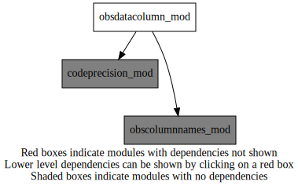
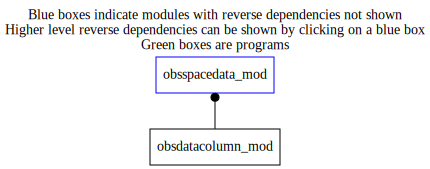

Dependency Diagrams:
 Direct Dependency Diagram¶
 Reverse Dependency Diagram¶
- Purpose
This module is used exclusively by the obsSpaceData module which follows in this file. The derived type is used to represent a “column” of observation data in an instance of the struct_obs defined in obsSpaceData. It contains a pointer for each possible type of data stored in a column, but only one should be allocated at any time.
Quick access
- Variables
odc_enkf_bdy_int_column_list,odc_enkf_bdy_real_column_list,odc_flavour_ib,odc_flavour_ih,odc_flavour_rb,odc_flavour_rh- Routines
odc_abort(),odc_activatecolumn(),odc_activeindexfromcolumnindex(),odc_allocate(),odc_class_initialize(),odc_columnelem(),odc_columnindexfromactiveindex(),odc_columnset(),odc_deallocate(),odc_initallcolumnflavours(),odc_initcolumnflavour(),odc_numactivecolumn()Needed modules
codeprecision_mod: MODULE codePrecision_mod (prefix=’pre’ category=’8. Low-level utilities and constants’)
obscolumnnames_mod: MODULE obsColumnNames_mod (prefix=’ocn’ category=’7. Low-level data objects and utilities’)Types
- type obsdatacolumn_mod/unknown_type¶
- Type fields
% activeindexfromcolumnindex (*) [integer ,pointer]
% activeindexfromcolumnindex_defined [logical ]
% columnactive (*) [logical ,pointer]
% columnindexfromactiveindex (*) [integer ,pointer]
% columnindexfromactiveindex_defined [logical ]
% columnnamelist (*) [character ,pointer]
% datatype [character ]
% headorbody [character ]
% ncol_beg [integer ]
% ncol_end [integer ]
- type obsdatacolumn_mod/unknown_type
- Type fields
% allocated [logical ]
% datatype [character ]
% null [integer ,pointer]
% value_i (*) [integer ,pointer]
% value_r (*) [real ,pointer]
- type obsdatacolumn_mod/unknown_type
- Type fields
% columns (*) [struct_obsdatacolumn ,pointer]
% null [struct_odc_flavour ,pointer]
% odc_flavour [struct_odc_flavour ,pointer]
Variables
- obsdatacolumn_mod/odc_enkf_bdy_int_column_list (8) [integer,parameter/public]¶
- obsdatacolumn_mod/odc_enkf_bdy_real_column_list (15) [integer,parameter/public]¶
- obsdatacolumn_mod/odc_flavour_ib [struct_odc_flavour,target/public]¶
- obsdatacolumn_mod/odc_flavour_ih [struct_odc_flavour,target/public]¶
- obsdatacolumn_mod/odc_flavour_rb [struct_odc_flavour,target/public]¶
- obsdatacolumn_mod/odc_flavour_rh [struct_odc_flavour,target/public]¶
Subroutines and functions
- subroutine obsdatacolumn_mod/odc_abort(cdmessage)¶
- Purpose
Abort a job on error (same as OBS_ABORT)
- Arguments
- Arguments
cdmessage [character ,in] :: message to be printed
- Note
For debugging (i.e. UNIT_TESTING is defined), obs_abort should generally be followed by a ‘return’ in the calling routine.
- Called from
odc_activeindexfromcolumnindex(),odc_allocate(),odc_columnelem(),odc_columnset(),odc_deallocate()
- function obsdatacolumn_mod/odc_activeindexfromcolumnindex(odc_flavour, column_index_in[, recompute])¶
- Purpose
The list of active columns is only a subset of all possible columns. Return the index into the list of active columns, given the index into the list of all columns.
- Arguments
odc_flavour [struct_odc_flavour ,inout]
column_index_in [integer ,in]
- Options
recompute [logical ,in,]
- Return
active_index_out [integer ]
- Called from
odc_activatecolumn(),obs_reducetompilocal(),obs_squeeze(),obs_mpiredistribute()- Call to
- subroutine obsdatacolumn_mod/odc_allocate(odc, numrows, name, datatype, scratchreal, scratchint)¶
- Purpose
Allocate a single column of obs data according to specifications in input arguments
- Arguments
- Arguments
odc [struct_obsdatacolumn ,inout] :: instance of the obsDataColumn type :numRows: number of column rows to allocate
name [character ,in] :: character string name of column :dataType: character string type of column data: REAL or INT :headOrBody: character string indicating HEAD or BODY
numrows [integer ,in]
datatype [character ,in]
scratchreal (*) [real ,in,pointer]
scratchint (*) [integer ,in,pointer]
- Called from
- Call to
- subroutine obsdatacolumn_mod/odc_activatecolumn(odc_flavour, column_index)¶
- Purpose
Set the ‘active’ flag for the indicated column. This enables memory allocation for this column without actually allocating the memory.
- Arguments
odc_flavour [struct_odc_flavour ,inout]
column_index [integer ,in]
- Called from
- Call to
odc_activeindexfromcolumnindex(),odc_columnindexfromactiveindex()
- subroutine obsdatacolumn_mod/odc_initcolumnflavour(odc_flavour, datatype_in, headorbody_in)¶
- Purpose
Set pointers according to the four column flavours (header / body, integer / real).
- Arguments
odc_flavour [struct_odc_flavour ,inout]
datatype_in [character ,in] :: REAL or INT
headorbody_in [character ,in] :: HEAD or BODY
- Called from
- subroutine obsdatacolumn_mod/odc_initallcolumnflavours()¶
- Purpose
Initialize the 4 flavours of odc
- Called from
- Call to
- subroutine obsdatacolumn_mod/odc_class_initialize(obscolumnmode)¶
- Purpose
Set variables that use the same values for all instances of the class.
- Arguments
obscolumnmode [character ,in]
- Called from
- Call to
- subroutine obsdatacolumn_mod/odc_columnelem(odc_array, column_index, row_index, value_i, value_r)¶
- Purpose
Returns the value of the row_index’th element in the column array with the indicated column_index.
The column array can be of any one of the four possible column-array flavours. The flavour is selected by one of four wrappers to this method.
- Arguments
odc_array [struct_obsdatacolumn_array ,in]
column_index [integer ,in]
row_index [integer ,in]
value_i [integer ,out]
value_r [real ,out]
- Called from
obs_bodyelem_i(),obs_bodyelem_r(),obs_headelem_i(),obs_headelem_r()- Call to
- function obsdatacolumn_mod/odc_columnindexfromactiveindex(odc_flavour, active_index_in[, recompute])¶
- Purpose
The list of active columns is only a subset of all possible columns. Return the index into the list of all columns, given the index into the list of active columns, and given the column flavour.
- Arguments
odc_flavour [struct_odc_flavour ,inout]
active_index_in [integer ,in]
- Options
recompute [logical ,in,]
- Return
column_index_out [integer ]
- Called from
odc_activatecolumn(),obs_clean(),obs_clean2(),obs_expandtompiglobal(),obs_reducetompilocal(),obs_squeeze(),obs_mpiredistribute(),obs_write_hdr()
- subroutine obsdatacolumn_mod/odc_columnset(odc_array, column_index, row_index, value_i, value_r, numelements, numelements_max)¶
- Purpose
Sets the value of the row_index’th element in the column array with the indicated column_index.
The column array can be of any one of the four possible column-array flavours. The flavour is selected by one of four wrappers to this method.
- Arguments
odc_array [struct_obsdatacolumn_array ,inout]
column_index [integer ,in]
row_index [integer ,in]
value_i [integer ,in]
value_r [real ,in]
numelements [integer ,inout]
numelements_max [integer ,in]
- Called from
obs_bodyset_i(),obs_bodyset_r4(),obs_bodyset_r8(),obs_headset_i(),obs_headset_r4(),obs_headset_r8()- Call to
- subroutine obsdatacolumn_mod/odc_deallocate(odc)¶
- Purpose
Deallocate a single column of obs data
- Arguments
- Arguments
odc [struct_obsdatacolumn ,inout] :: instance of the obsDataColumn type
- Called from
- Call to
- function obsdatacolumn_mod/odc_numactivecolumn(odc_array)¶
- Purpose
Return the number of active columns that are contained in the given column array.
The column array can be of any one of the four possible column-array flavours.
- Arguments
odc_array [struct_obsdatacolumn_array ,in]
- Return
numactivecolumn [integer ]
- Called from
obs_clean(),obs_clean2(),obs_expandtompiglobal(),obs_reducetompilocal(),obs_squeeze(),obs_mpiredistribute(),obs_write_hdr()
{kind=link}
{kind=link}